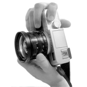

A MESSAGE FROM THE
NONAOLOGY
HISOTRY LEICA
A Name and Brand is Born!
최초의 소형 포켓 카메라와 함께 오스카 바르낙은 고향에서 일궈낸 그의 대 발명에 대한 인상적인 전문서를 발표한다. 1925년 라이카의 판매가 시작되자마자, 사진가들은 이 새롭고, 뛰어난 휴대성의 카메라를 사용하여 빠르고 간편한 방식으로 예술적인 걸작을 탄생시키고, 취재활동을 시작한다.
Leica raborution
1914년 시작된 Ur-Leica의 혁명은 지속적인 성공을 이어갔다. 1932년, 약 90,000대의 라이카 제품이 팔려나갔고, 1961년 그 숫자는 백만 대의 경이로운 숫자로 증가한다. 또한, 1954년의 라이카 M3나 1984년의 M6의 전설적인 R.F 카메라를 포함한 여러 신제품 개발이 획기적으로 일어난다. 동시에, 라이카 렌즈 또한 그와 함께 성공 스토리를 이어가기 시작하고, 라이카의 쌍안경은 그 성능과 편리함으로 전 세계적으로 많은 감명을 주게되었다.
- 라이카 제품 탄생의 역사
2006디지털 R.F방식의 Leica M8 출시
2005디지털 겸 아날로그 R8 카메라로 변형.
2004가볍고 향상된 구성으로 Geovid 8ｘ42 BRF로 재 디자인 실시
2002디지털 디스플레이 형식의 타이머가 장착된 Leica M7 출시.
1999C1과 함께 새로운 컴팩트 시리즈 출시
1998플래시 노출장치가 장착된 Digilux 출시
1996마이크로프로세서에 의해 제어되는 SLR 카메라 Leica R8 출시
1994비구면 렌즈 발표. 라이카 최초의 망원경 Leica Televid 발표.
1992라이카 최초의 통합 레이저 R.F 쌍안경 Geovid 7ｘ42BD 출시
1990새로 개발된 매커니즘의 쌍안경 시리즈 Leica Trinovid BA 출시
1989콤팩트 카메라 LEICA-AF-C1 출시
1984라이트 장치와 파인더 LED가 장착된 Leica M6 출시
1980라이카 최초로 멀티 프로그램 자동이 가능한 Leica R4 출시
1976선택적 라이트 장치가 부착된 전자식 Leica R3 출시
1965라이카 최초의 SLR, Leicaflex 생산시작.
1957마지막 나사산 모델인 Leica Illg 소개.
1925붙박이접이식 렌즈 FILAR 발표.
1914Oskar Barnack의 Ur-Leica 발명.
1907Max Berek의 감독 아래 쌍안경 생산.
188710,000개의 현미경 생산.
1849Carl Kellner는 렌즈와 현미경 개발을 위한 광학회사 설립